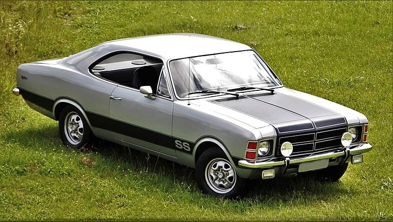

Chevrolet Opala SS 4.1
O Chevrolet Opala SS 4.1 é um modelo icônico de carro fabricado pela General Motors do Brasil de 1968 a 1992. O Opala SS foi lançado em 1971 como uma versão esportiva do Opala, equipado com um motor seis cilindros em linha de 4,1 litros de capacidade, que produzia 168 cavalos de potência e 31,8 kgfm de torque.
O Opala SS 4.1 apresentava um design distintivo, com faixas decorativas nas laterais, faróis de neblina, rodas de liga leve de 14 polegadas e um spoiler traseiro. O interior era equipado com bancos dianteiros esportivos, volante de três raios e painel de instrumentos completo.
O Opala SS 4.1 era um carro de alta performance para sua época, com aceleração de 0 a 100 km/h em cerca de 11 segundos e velocidade máxima de 180 km/h. O carro também foi utilizado em competições de automobilismo, como a Stock Car Brasil.
Hoje em dia, o Opala SS 4.1 é um carro de colecionador muito valorizado por entusiastas de automóveis antigos no Brasil e em outros países. Sua aparência e desempenho clássicos continuam a ser admirados e apreciados por muitos amantes de carros em todo o mundo.